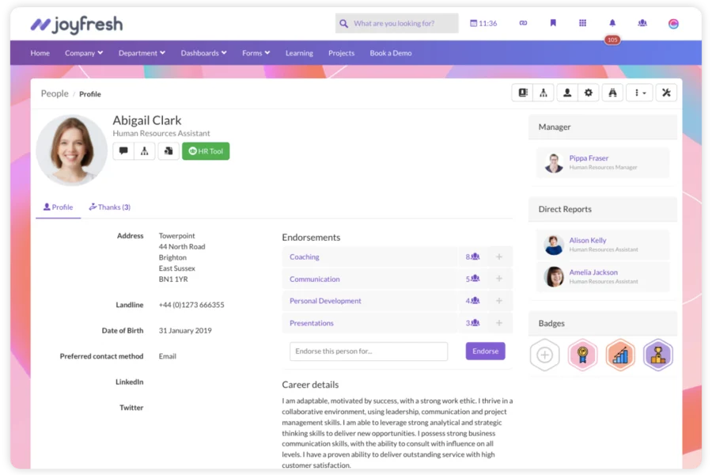

The problem
Six categories of tool, and none of them holds the whole thing.
- Itinerary builders hold the trip. Booking systems hold the reservation. CRMs hold the client. Consortium portals hold the terms.
- The agency's intranet had been pressed into service as a suite it was never meant to be.
- Nothing sat in the middle, so every advisor rebuilt the same picture by hand, every time.
And this is what that looks like
The tools an advisor already had


Four of the six, and no two built in the same decade. None of them holds the commission, the amenities and the client at the same time — so the advisor is the integration layer.
Eleven stages, and every one touches all six
Where we built

We built the opening stretch, everything up to the proposal — where the knowledge work concentrates and where nobody else was building. Every hour saved before stage five is an hour that was never billable.
The people we designed with
The design partner · weekly, for eight months


+40advisors
The founder who ran the agency on the intranet we were replacing, the operations lead who owned its records, and the advisors whose weeks disappeared into unpaid proposal work. Every decision in the second half of this deck traces to something one of them said in a room.
Six systems in. One model. Every surface reads from it.
What the agency bought

Not answers — a place that absorbs rate sheets as PDFs, inventories as half-structured spreadsheets and terms buried in forwarded email, and returns one record per thing. On the right is a single record out of 4, the directory. The other four surfaces are what I am about to open.

The constraint
Two user calls a week. Shipping weekly, sometimes twice.
- Design ahead of code could not hold that pace. The first build is what happens when it tries.
- So the iteration surface became working software. Four repositories, with the prototype using the design system as a live dependency.
- The roadmap held the decisions. The prototype was the specification. There was always something an advisor could use on Thursday.
The first build
Chat over a pile of documents, results as cards.

June 2025. It demoed well — the conversation flowed and the shelf filled up.
What came back
The cards had nothing underneath them.

Hotel name. Location. Description. Asked for a Japan itinerary it returned
cherry-blossom festivals, cited to Reddit and Wikipedia, when what was needed was the agency's own
negotiated terms.

One of them, followed all the way through
We wrote the sharing rule in March, along with the thing that would make us tear it up. A month later that thing happened.
- 31 March · decided Sharing a traveller is all or nothing. An advisor hands over the whole profile or none of it. We wrote the revisit condition into the decision itself: reopen this if advisors refuse to share because of sensitive notes.
- 30 April · heard The agency lead argued both sides in one call. He wanted notes shared — “you don’t necessarily have to be on this call to retrieve that information” — and in the same conversation drew the line at client data. He also kept the finance dashboard out of it entirely.
- The same week · reopened That was our condition, met almost word for word. Nobody had to argue for reopening it. We had already agreed in March what would earn a second look, so the only question left was what replaced it.
- Shipped · and still standing Three tiers, and money is not one of them. Full lets a colleague edit and run Acuity but never re-share. Basic is a name and a contact, for an introduction. Spend sits behind a separate permission at every tier, because who you trust with a client is a different question from who you trust with the numbers.
Challenge 1 · first attempt
They asked to check every field by hand.

Field 11 of 87. Record 3 of 214. A completely reasonable request from people
whose business depends on the terms being right.

Challenge 1 · where we landed
We kept the check, and made it something a person could actually finish.
- A fixed list of questions a travel designer actually needs answered, rather than every field in the schema.
- Each proposed answer arrives as one card: the claim, the quoted line, the page.
- Two rows here are held rather than offered — a converted figure with no source currency, and boilerplate copy. Held rows have no confirm button.
- When a document is silent, that is recorded as silence. An absent answer is not a no.

Challenge 2 · where we landed
The end date came off.
An advisor closes a notice by hand, and the product asks them to confirm it is still true when it goes stale.
Product decision log · 31 March 2026
Temporary advisories: no auto-expire. Advisories stay active until manually closed.
Build a stale-advisory review nudge.
The cost: more noise, and a review queue. We took the annoying failure over the invisible one every time this came up.
Challenge 5 · first attempt
A left rail, and the conflict on its own page.

The pattern every comparable tool in this industry uses. It worked.

Reflection
What I would challenge if I picked it up again.
- The resolve flow puts real work on the advisor and does not scale. At ten times the records it needs batching and thresholds — without quietly reintroducing the ranking we removed.
- The traveller side is the least proven thing here. The surfaces are built; the extraction that feeds them was an outline when I rolled off.
- I would read the permission model as an adversary rather than a user. Both leaks I found were of that kind, and I found them late.